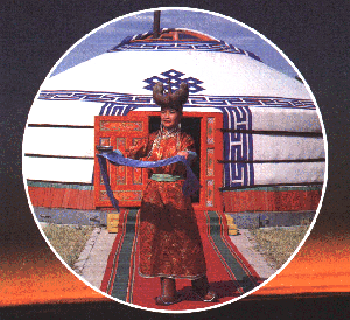

Mongolia
Everything You Wanted to Know about Mongolia

Welcome and Enjoy Mongol Hospitality
Mongolia is a beautiful country situated in the heart of Central Asia. Mongolia has a large territory (almost three times as France's) and diverse terrains. There are famous Gobi desert in the south, and snow capped Altai mountains in the West, pristine clear lakes like Huvsgul in the North. People in Mongolia are proud of their heritage and history. It is also a place where a unique nomadic culture has been preserved for many centuries since the time of Chinggis Khan.
MongoliaOnline General daily news in English, useful links, provided by the only Internet service company in Mongolia, DataCom.
Mongolia Today(UN page) Recent political and economic development news, well organized site, check out their online magazine, and enjoy quality pictures of Mongolia
Chinggis Khan Feature story which ran on National Geography magazine December 1997 issue. Among other things the map of Mongol empire is worth checking out.
Mongolia World Various links on and about Mongolia, divided into subcategories.
Shirchin Baatar's Homepage Research fellow at Harvard Medical School, he has many interesting stories to tell.
Boojum Expeditions Adventure travel company specializing in horse riding trips in Mongolia, some very useful information, if you ever want to go to Mongolia.
I have some photos taken last summer when I travelled in the Central and Southern Mongolia with Travel & Leisure magazine staff. For more on that look for June 99 issue of the magazine on news stands.
Photos
- Water fall in Central Mongolia, Orhonii Hurhree
- Valley near Hujirt in Central Mongolia
- A lone Camel in South Gobi(relax not a Camel Ad)
- Ger on the hill a traditional tent-like house for nomads


If you want to visit Mongolia, it is not as difficult or far as you think nowadays. To start get some information from Lonely Planet. Or if you are into adventure, horse riding go with Boojum. I worked for them one summer as a guide on the first kayaking trip of the lake Huvsgul. The lake contains 2%(maybe little less, I drank a lot from it) of the world's fresh water.